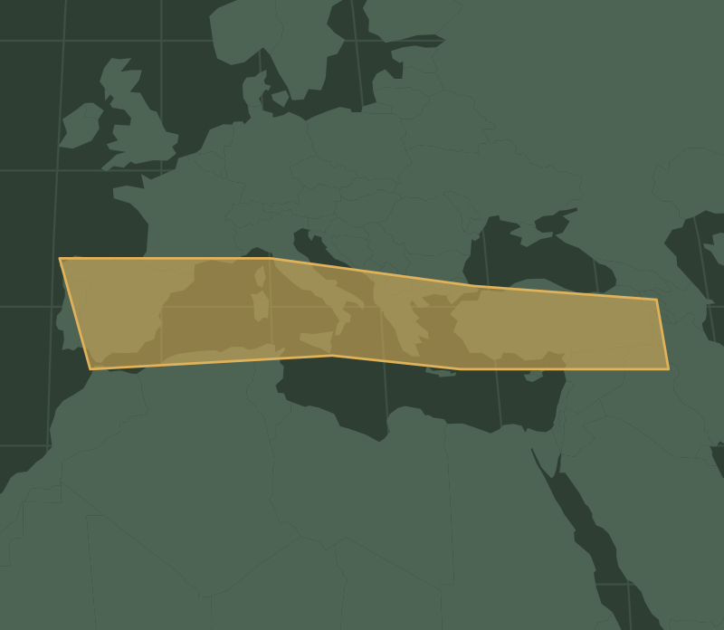

Planta · Papaveráceas · Mediterráneo y Asia Menor
Adormidera
Papaver somniferum L.
La adormidera es la planta del opio, el látex seco de sus cápsulas. Acompaña a los pueblos de Europa desde el Neolítico y fue símbolo sagrado en el Egeo de la Edad del Bronce. De ella proceden la morfina y la codeína, todavía hoy medicamentos contra el dolor.129
También se llamaamapola del opio · opio (el látex) · Papaver somniferum · «la que trae el sueño»
- Qué es
- Hierba anual de la familia de las amapolas
- Territorio
- Mediterráneo y Asia Menor; hoy cultivada en muchos países
- Parte usada
- Látex de la cápsula verde; las semillas, como alimento
- Principios activos
- Morfina, codeína, tebaína, papaverina y noscapina
- Empieza y dura
- No aplica: ficha botánica e histórica
- Quién guarda su memoria
- Pueblos neolíticos de Europa, Egeo, Mesopotamia y Asia
La planta
La amapola que trae el sueño
Es una hierba anual de hojas verde azuladas, casi siempre lampiñas, y savia blanca. Esa savia lechosa, rica en morfina y otros opiáceos, recorre la planta por un sistema de vasos laticíferos; las semillas apenas tienen morfina y se usan como condimento y para aceite.4
El opio es el látex secado al aire que sale de la cápsula de la semilla.3
Su nombre científico significa «la que trae el sueño».1
- Familia
- Papaveráceas
- Ciclo
- Anual
- Savia
- Látex blanco
- Semillas
- Alimento y aceite
Memoria y tradición
Siete mil años junto a los humanos
Es quizá la única planta cuya domesticación empezó en la Europa neolítica: se cree que se cultivó primero en la cuenca mediterránea desde mediados del sexto milenio a. C., donde vivía su probable antepasado silvestre, Papaver somniferum subsp. setigerum.2
Fuera del Mediterráneo, los hallazgos más frecuentes son de yacimientos de la cultura de la cerámica de bandas (5300–4900 a. C.), con una dispersión de sur a norte.2
Se han descrito al menos diecisiete hallazgos en asentamientos neolíticos de Suiza, Alemania y España, entre ellos muchas cápsulas en un enterramiento de la Cueva de los Murciélagos.3
En el Egeo de la Edad del Bronce aparece en contextos religiosos minoicos y micénicos; en el museo de Heraclión se conserva una figura de diosa de Gazi, en Creta, con los brazos alzados, que la investigación relaciona con la adormidera.1
A menudo se lee que tablillas sumerias del cuarto milenio a. C. ya hablan de su cultivo.2 Un estudio de 2022 revisa qué hay de hecho y qué de «factoide» en esa historia temprana, así que conviene tomar esas fechas con cautela.6
En toda Eurasia, antes de la anestesia, el opio fue uno de los pocos remedios eficaces contra el dolor.4 Hoy la planta se mira también desde la etnografía de sus usos como alimento, medicina y estupefaciente.5
En el tiempo
Primeros cultivos probables en el Mediterráneo occidental
Presente en la cultura de la cerámica de bandas
Contextos sagrados minoicos y micénicos
Derosne aísla la «sal de opio»
Sertürner describe la morfina
Sus nombres
- adormidera
- castellano
- opio
- del griego opós, jugo
- Schlafmohn
- alemán, «amapola del sueño»
- papaver somniferum
- latín
Territorio y cuidado
Del Mediterráneo al mundo

Qué ayuda
- Conocerla por su historia y su botánica.
- Recordar que es la fuente de medicamentos esenciales.
- Diferenciar su papel medicinal del uso sin control.
- Respetar los marcos legales y sanitarios de cada país.
Qué contiene
Cinco alcaloides principales
La planta tiene cinco alcaloides principales: morfina, noscapina, codeína, tebaína y papaverina. Unos actúan sobre los receptores opioides y otros tienen efectos no opioides.7
En 1803 Derosne aisló una «sal de opio», y en 1817 Sertürner la describió con detalle y la llamó morfina, por Morfeo, dios griego de los sueños.7
Los alcaloides del opio producen efectos analgésicos y narcóticos a través de los receptores opioides, y de ellos derivan medicamentos como la morfina y la codeína.9
La experiencia
Sueño y alivio del dolor
Las fuentes antiguas la asocian al sueño y al alivio del dolor; su nombre lo dice.14
No es un psicodélico: su efecto es analgésico y narcótico, mediado por receptores opioides.9
Investigación
Qué se ha estudiado
Sus alcaloides son medicamentos aprobados: la morfina contra el dolor moderado o intenso y la codeína como analgésico y antitusivo.9
La revisión farmacológica describe también su mecanismo, la dependencia y la abstinencia.7
Alcance de estos datosMedicamentos aprobados derivados de la planta; la planta en sí no forma parte de la terapia psicodélica.
Con cuidado
Lo que conviene saber antes
Los alcaloides del opio crean dependencia y tolerancia, y su uso continuado se sostiene para evitar la abstinencia.7
La toxicidad aguda por sobredosis de opioides deprime la respiración.8
La morfina suma su efecto al de otros depresores respiratorios, como otros opiáceos o los barbitúricos.10
Ficha histórica y botánica: no es una guía de uso.
Para seguir
Libros y medicinas emparentadas
Fuentes
De dónde sale cada dato
- Hunt, P. A Selective History of the Sacred Poppy. Electrum Magazine. electrummagazine.com/?p=2980.
- Salavert, A. et al. The opium poppy in Europe: exploring its origin and dispersal during the Neolithic. Antiquity, 2018. cambridge.org/core/journals/antiquity/article/opium-poppy-in-europe-exploring-its-origin-and-dispersal-during-the-neolithic/2EF55CA05436425F48982EF9C405B849.
- Wikipedia. Opium. en.wikipedia.org/wiki/Opium.
- Oxford Botanic Garden and Herbaria. Plants 400: Papaver somniferum. herbaria.plants.ox.ac.uk/bol/plants400/Profiles/OP/Papaver.
- Makovnyka, G. Opium Poppy Agriculture and Consumption. The Arbutus Review 11(2), 2020. journals.uvic.ca/index.php/arbutus/article/view/19609/8794.
- Facts and Factoids in the Early History of the Opium Poppy. The Social History of Alcohol and Drugs 36(1), 2022. journals.uchicago.edu/doi/full/10.1086/718481.
- Capítulo de revisión sobre los alcaloides del opio. IntechOpen. intechopen.com/online-first/71219.
- Revisión sobre la toxicidad de morfina, codeína, noscapina y papaverina. Current Issues in Pharmacy and Medical Sciences. czasopisma.umlub.pl/curipms/article/download/2745/3086/8354.
- DrugBank. Opiate Alkaloids. drugbank.ca/categories/DBCAT000692.
- Kapoor, L. D. Chemical and Pharmacological Aspects of Opium Alkaloids, cap. 8. Taylor & Francis. taylorfrancis.com/books/e/9781003075356/chapters/10.1201/9781003075356-8.
- Mapa APDER, con datos de Natural Earth · dominio público
- Dibujos de moléculas APDER
Última revisión: 25 de noviembre de 2026. Si ves un error, escríbenos a info@apder.org.